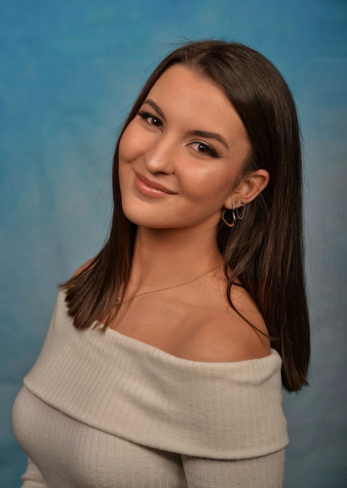

Hi, I'm Mila Jovanovska, a 19-year-old from Skopje, North Macedonia. I’ve always been a dedicated
student,
winning awards and participating in competitions in math, arts, and languages. I’m currently pursuing my
undergraduate studies at the Faculty of Computer Science and Engineering at UKIM.
Art has always played a big role in my life. I started with crafts like origami and clay, but painting
became my true passion. Over the past few years, I’ve been attending painting sessions with a
professional
artist, where I’ve learned important techniques and grown both artistically and personally.
Today, I’m focused on combining art with technology. I believe my creativity and communication skills
are
valuable assets, and I’m motivated to keep learning, improving, and expressing myself through both code
and
canvas.
